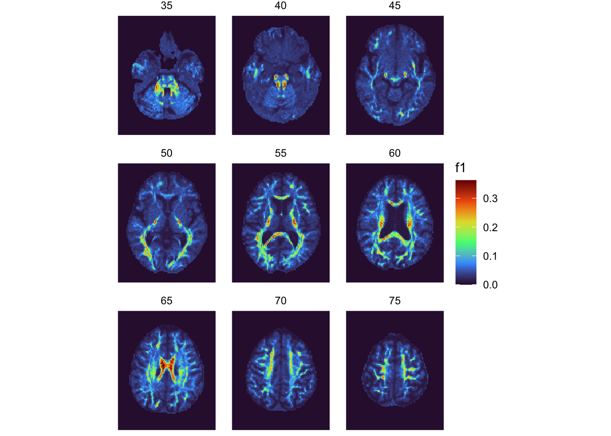
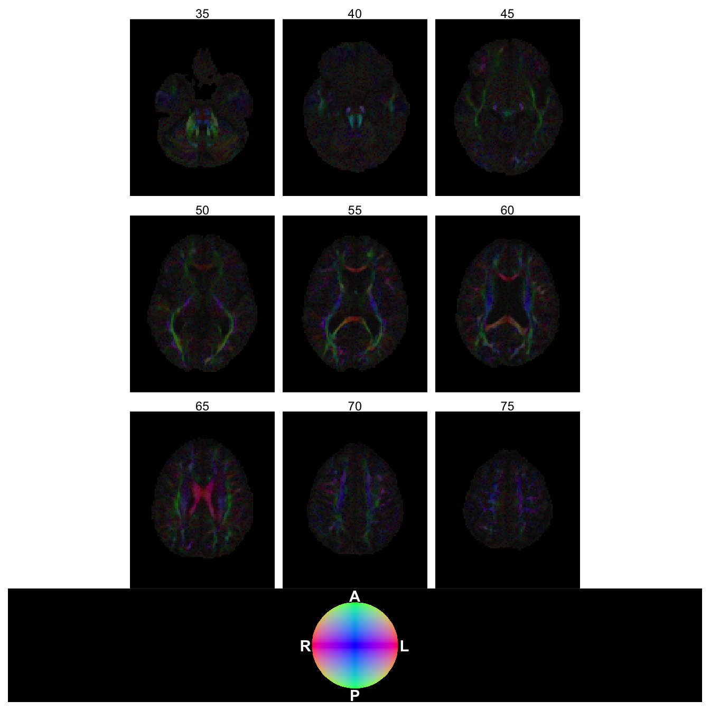

library(dplyr)
library(ggplot2)
library(nio)
library(patchwork)
library(tidyr)18 Bayesian Estimation of Diffusion Parameters Obtained using Sampling Techniques (BEDPOSTX)
There are several ways to reconstruct the microstructural properties and orientation of white matter tracts from diffusion MRI (dMRI). A relatively simple and common method is the Diffusion Tensor Imaging (DTI) model (see Chapter 17 for regional summary metrics derived from DTI), which works well for regions with a single, coherent fiber direction (e.g. the corpus callosum). However, DTI fails in regions containing “crossing fibers” (where multiple neural tracts intersect within a single voxel), which account for a substantial portion of the brain’s white matter.
To overcome this, A2CPS employs a more advanced model: Bayesian Estimation of Diffusion Parameters Obtained using Sampling Techniques with Crossing-Fibers (BedpostX). This method uses a probabilistic approach to model up to three distinct fiber orientations per voxel, allowing for far more accurate white matter tractography.
While A2CPS uses BedpostX primarily as a step towards tractography (Chapter 19), the BedpostX derivatives may be interesting in some analyses on their own (e.g., comparison of orientation distribution functions and fiber orientation distributions). This kit reviews those outputs.
18.1 Starting Project
18.1.1 Locate Data
We assume that the data were downloaded from the NIMH Data Archive (NDA) as a Data Package and saved to data/nda inside the project folder (Appendix C describes what a package contains). Each NDA data structure is a table, <structure>.txt, and any files that the structure references are underneath <structure>/corral-secure/projects/A2CPS/products/consortium-data/pre-surgery. Paths in the text start from that folder, while code chunks spell out the full path from the project folder.
The derivatives are referenced by fmriresults01, underneath mris/derivatives/bedpostx. Although BedpostX derivatives are not covered by BIDS, the derivatives are organized in a “BIDS-ish” manner:
$ ls mris/derivatives/bedpostx/ | head
sub-10003
sub-10008
sub-10010
sub-10011
sub-10013
sub-10014
sub-10015
sub-10017
sub-10020
sub-10023
$ tree -d mris/derivatives/bedpostx/sub-10003
mris/derivatives/bedpostx/sub-10003
└── ses-V1
└── dwi.bedpostx
├── logs
│ └── monitor
└── xfms
$ ls mris/derivatives/bedpostx/sub-10003/ses-V1/dwi.bedpostx/
bvals dyads1.nii.gz dyads2_thr0.05.nii.gz dyads3_thr0.05.nii.gz mean_f0samples.nii.gz mean_fsumsamples.nii.gz mean_S0samples.nii.gz mean_th3samples.nii.gz merged_ph1samples.nii.gz merged_th2samples.nii.gz xfms
bvecs dyads2_dispersion.nii.gz dyads3_dispersion.nii.gz logs mean_f1samples.nii.gz mean_ph1samples.nii.gz mean_tausamples.nii.gz merged_f1samples.nii.gz merged_ph2samples.nii.gz merged_th3samples.nii.gz
commands.txt dyads2.nii.gz dyads3.nii.gz mean_dsamples.nii.gz mean_f2samples.nii.gz mean_ph2samples.nii.gz mean_th1samples.nii.gz merged_f2samples.nii.gz merged_ph3samples.nii.gz monitor
dyads1_dispersion.nii.gz dyads2_thr0.05_modf2.nii.gz dyads3_thr0.05_modf3.nii.gz mean_d_stdsamples.nii.gz mean_f3samples.nii.gz mean_ph3samples.nii.gz mean_th2samples.nii.gz merged_f3samples.nii.gz merged_th1samples.nii.gz nodif_brain_mask.nii.gz18.1.2 Extract Data
The majority of these files are niftis that contain summaries of parameters for the model fit by BedpostX. This model attempts to uncover how fibers are oriented within voxels, how many fibers are present, and the diffusivity associated with each fiber. In this kit, we’ll make a plot of the most dominant (first) fiber orientation.
First, let’s grab the mean_f1samples file, which is an estimate of how much of the diffusivity samples can be attributed to first fiber. For convenience and speed, we’ll just grab every fifth slice, and also restrict the field of view.
# files referenced by fmriresults01 in the NDA package (see Locate Data)
fmriresults01 <- file.path(
"data/nda/fmriresults01",
"corral-secure/projects/A2CPS/products/consortium-data/pre-surgery"
)
# take every 5th slice
f1 <- to_tbl(
file.path(
fmriresults01,
"mris/derivatives/bedpostx/sub-10003/ses-V1/dwi.bedpostx/mean_f1samples.nii.gz"
),
measure = "f1"
) |>
filter(!(k %% 5), k > 30, k < 80)
head(f1)| i | j | k | f1 |
|---|---|---|---|
| 1 | 1 | 35 | 0 |
| 2 | 1 | 35 | 0 |
| 3 | 1 | 35 | 0 |
| 4 | 1 | 35 | 0 |
| 5 | 1 | 35 | 0 |
| 6 | 1 | 35 | 0 |
The table is large and hard to understand at a glance, so it may be helpful to visualize the slices quickly.
f1 |>
ggplot(aes(x = i, y = j, fill = f1)) +
facet_wrap(~k) +
geom_raster() +
scale_fill_viridis_c(option = "turbo") +
coord_fixed() +
theme_void()
Information about the fiber orientation is stored in the “dyads” file. Each of these dyad files is the mean of the principle diffusion direction, stored as a 3d vector; that is, the nifti files are 4d, with the third dimension corresponding to the x, y, and z coordinates. To visualize these vectors, we’re going to map the coordinates onto the Red Green Blue color space (for a discussion of color scales, see Pajevic & Pierpaoli, 1999).
Pajevic, S., & Pierpaoli, C. (1999). Color schemes to represent the orientation of anisotropic tissues from diffusion tensor data: Application to white matter fiber tract mapping in the human brain. Magnetic Resonance in Medicine: An Official Journal of the International Society for Magnetic Resonance in Medicine, 42(3), 526–540. https://doi.org/10.1002/(SICI)1522-2594(199909)42:3%3C526::AID-MRM15%3E3.0.CO;2-J
gamma_correction <- 1.8
fiber <- to_tbl(
file.path(
fmriresults01,
"mris/derivatives/bedpostx/sub-10003/ses-V1/dwi.bedpostx/dyads1.nii.gz"
)
) |>
inner_join(f1, by = join_by(i, j, k)) |>
mutate(
value = (abs(value) * f1)^(1 / gamma_correction)
) |>
pivot_wider(names_from = t) |>
mutate(
across(c(`1`, `2`, `3`), \(x) pmin(pmax(x, 0), 1)),
hex_color = rgb(`1`, `2`, `3`)
)
head(fiber)| i | j | k | f1 | 1 | 2 | 3 | hex_color |
|---|---|---|---|---|---|---|---|
| 1 | 1 | 35 | 0 | 0 | 0 | 0 | #000000 |
| 2 | 1 | 35 | 0 | 0 | 0 | 0 | #000000 |
| 3 | 1 | 35 | 0 | 0 | 0 | 0 | #000000 |
| 4 | 1 | 35 | 0 | 0 | 0 | 0 | #000000 |
| 5 | 1 | 35 | 0 | 0 | 0 | 0 | #000000 |
| 6 | 1 | 35 | 0 | 0 | 0 | 0 | #000000 |
Now, having associated each voxel with a color, we can make a raster of each slice. Before then, however, let’s do a bit of extra work to make a legend for the color scale.
df_legend <- expand_grid(
x = seq(-1, 1, length.out = 500),
y = seq(-1, 1, length.out = 500)
) |>
mutate(radius = sqrt(x^2 + y^2)) |>
filter(radius <= 1) |>
mutate(
z = sqrt(1 - x^2 - y^2),
r = (abs(x))^(1 / gamma_correction),
g = (abs(y))^(1 / gamma_correction),
b = (abs(z))^(1 / gamma_correction),
across(c(r, g, b), \(x) pmin(pmax(x, 0), 1)),
hex_color = rgb(r, g, b)
)
p_legend <- df_legend |>
ggplot(aes(x = x, y = y, fill = hex_color)) +
geom_raster() +
scale_fill_identity() +
coord_fixed(xlim = c(-1.2, 1.2), ylim = c(-1.2, 1.2)) +
theme_void() +
# Add anatomical orientation labels (adjust based on your data's specific orientation)
annotate(
"text",
x = 1.15,
y = 0,
label = "L",
color = "white",
fontface = "bold"
) +
annotate(
"text",
x = -1.15,
y = 0,
label = "R",
color = "white",
fontface = "bold"
) +
annotate(
"text",
x = 0,
y = 1.15,
label = "A",
color = "white",
fontface = "bold"
) +
annotate(
"text",
x = 0,
y = -1.15,
label = "P",
color = "white",
fontface = "bold"
) +
# Title and context for the Z-axis
theme(
plot.background = element_rect(fill = "black", color = NA),
text = element_text(color = "white"),
plot.caption = element_text(hjust = 0.5, size = 9, margin = margin(t = 10))
)p_fiber <- fiber |>
ggplot(aes(x = i, y = j, fill = hex_color)) +
facet_wrap(~k) +
geom_raster() +
scale_fill_identity() +
coord_fixed() +
theme_void() +
theme(panel.background = element_rect(fill = "black"))
p_fiber + p_legend + plot_layout(heights = c(5, 1), nrow = 2)
18.2 Considerations While Working on the Project
18.2.1 Additional Information
For additional information on the BedpostX, see the FSL tutorial video on youtube. Additionally, the FSL Tractography Practical provides helpful information for visualizing the outputs of BedpostX with fsleyes.
18.2.2 Variability Across Scanners
Many MRI biomarkers exhibit variability across the scanners, which may confound some analyses. For an up-to-date assessment of the issue and overview of current thinking, please see Appendix D.
18.2.3 Data Quality
As with any MRI derivative, all pipeline derivatives have been included. This means that products were included regardless of their quality, and so some products may have been generated from images that are known to have poor quality—rated “red”, or incomparable. For details on the ratings and how to exclude them, see Appendix A. Additionally, extensive QC has not yet been performed on the derivatives themselves, and so there may be cases where pipelines produced atypical outputs. For an overview of planned checks, see Confluence.
18.2.4 Data Generation (Methods)
These outputs were generated by the bedpostx_app. BedpostX was run with maximum of 3 fibers per voxel, and default weight (1), burn-in (1000), jumps (1250), and step samples (25) as well as estimating the noise floor and using Rician noise.
18.2.5 Citations
If you use these products in your analyses, please cite the relevant papers from FSL.
In publications or presentations including data from A2CPS, please include the following statement as attribution:
Data were provided (in part) by the A2CPS Consortium funded by the National Institutes of Health (NIH) Common Fund, which is managed by the Office of the Director (OD)/Office of Strategic Coordination (OSC). Consortium components and their associated funding sources include Clinical Coordinating Center (U24NS112873), Data Integration and Resource Center (U54DA049110), Omics Data Generation Centers (U54DA049116, U54DA049115, U54DA049113), Multi-site Clinical Center 1 (MCC1) (UM1NS112874), and Multi-site Clinical Center 2 (MCC2) (UM1NS118922).
Note
Berardi, G., Frey-Law, L., Sluka, K. A., Bayman, E. O., Coffey, C. S., Ecklund, D., Vance, C. G. T., Dailey, D. L., Burns, J., Buvanendran, A., McCarthy, R. J., Jacobs, J., Zhou, X. J., Wixson, R., Balach, T., Brummett, C. M., Clauw, D., Colquhoun, D., Harte, S. E., … Wandner, L. D. (2022). Multi-site observational study to assess biomarkers for susceptibility or resilience to chronic pain: The acute to chronic pain signatures (A2CPS) study protocol. Frontiers in Medicine, 9. https://doi.org/10.3389/fmed.2022.849214
Sluka, K. A., Wager, T. D., Sutherland, S. P., Labosky, P. A., Balach, T., Bayman, E. O., Berardi, G., Brummett, C. M., Burns, J., Buvanendran, A., et al. (2023). Predicting chronic postsurgical pain: Current evidence and a novel program to develop predictive biomarker signatures. Pain, 164(9), 1912–1926. https://doi.org/10.1097/j.pain.0000000000002938
Sadil, P., Arfanakis, K., Bhuiyan, E. H., Caffo, B., Calhoun, V. D., Clauw, D. J., DeLano, M. C., Ford, J. C., Gattu, R., Guo, X., Harris, R. E., Ichesco, E., Johnson, M. A., Jung, H., Kahn, A. B., Kaplan, C. M., Leloudas, N., Lindquist, M. A., Luo, Q., … Chronic Pain Signatures Consortium, T. A. to. (2024). Image processing in the acute to chronic pain signatures (A2CPS) project. bioRxiv. https://doi.org/10.1101/2024.12.19.627509
When using neuroimaging derivatives, please also cite Sadil et al. (2024).